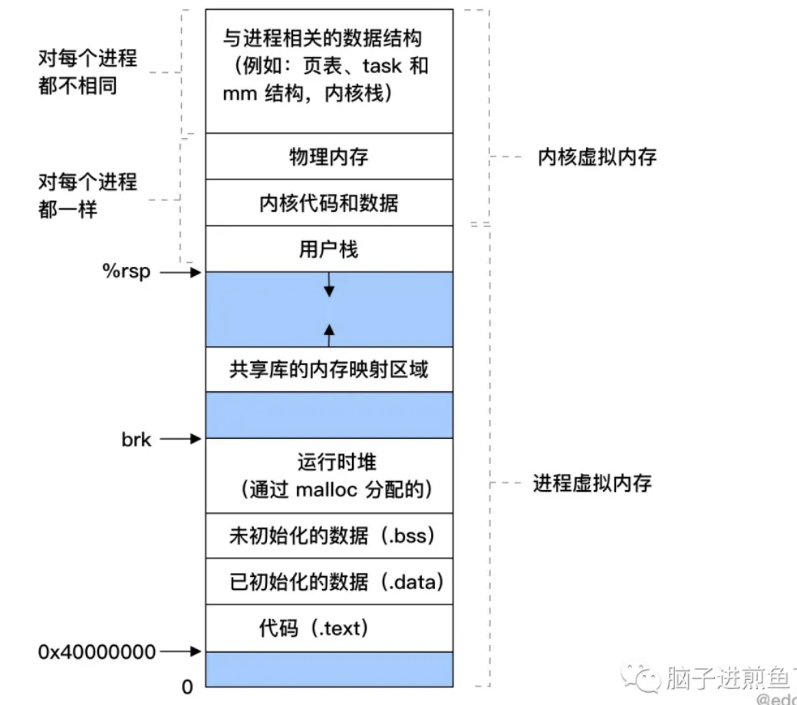
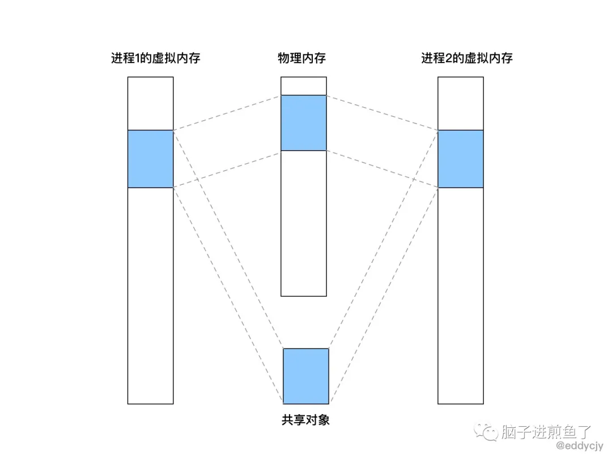
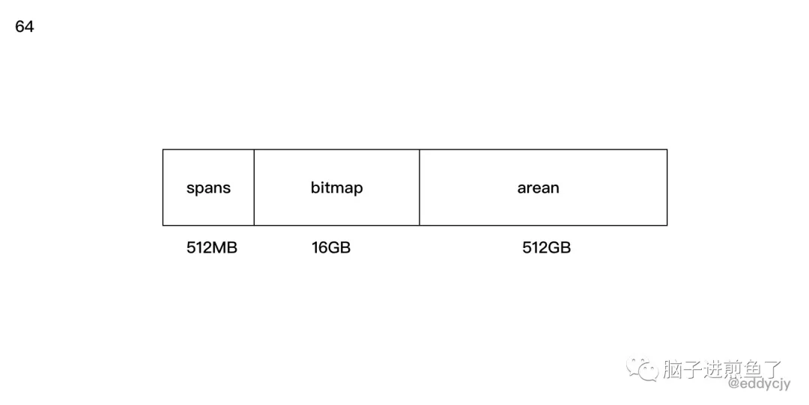

前段时间，某同学说某服务的容器因为超出内存限制，不断地重启，问我们是不是有内存泄露，赶紧排查，然后解决掉，省的出问题。
我们大为震惊，赶紧查看监控+报警系统和性能分析，发现应用指标压根就不高，不像有泄露的样子。
问题到底是出在哪里了呢，我们进入某个容器里查看了 top 的系统指标：
1 | PID VSZ RSS ... COMMAND |
看上去也没什么大开销的东西，就一个 Go 进程？就这？
再定眼一看，某同学就说 VSZ 那么高，而某云上的容器内存指标居然恰好和 VSZ 的值相接近，因此就怀疑是不是 VSZ 所导致的，觉得存在一定的关联关系。
这个猜测的结果到底是否正确呢？
基础知识
本篇文章将主要围绕 Go 进程的 VSZ 来进行剖析，看看到底它为什么那么 “高”。
第一节为前置的补充知识，大家可按顺序阅读。
什么是 VSZ
VSZ 是该进程所能使用的虚拟内存总大小，它包括进程可以访问的所有内存，其中包括了被换出的内存（Swap）、已分配但未使用的内存以及来自共享库的内存。
为什么要虚拟内存
在前面我们有了解到 VSZ 其实就是该进程的虚拟内存总大小，那如果我们想了解 VSZ 的话，那我们得先了解 “为什么要虚拟内存？”。
本质上来讲，在一个系统中的进程是与其他进程共享 CPU 和主存资源的。
因此在现代的操作系统中，多进程的使用非常的常见，如果太多的进程需要太多的内存，在没有虚拟内存的情况下，物理内存很可能会不够用，就会导致其中有些任务无法运行，更甚至会出现一些很奇怪的现象。
例如 “某一个进程不小心写了另一个进程使用的内存”，就会造成内存破坏，因此虚拟内存是非常重要的一个媒介。
虚拟内存包含了什么
虚拟内存，又分为：
- 内核虚拟内存。
- 进程虚拟内存。
每一个进程的虚拟内存都是独立的， 内部结构如下图所示。

在内核虚拟内存中，包含了内核中的代码和数据结构。
内核虚拟内存中的某些区域会被映射到所有进程共享的物理页面中去，因此你会看到 ”内核虚拟内存“ 中实际上是包含了 ”物理内存“ 的，它们两者存在映射关系。
而从应用场景上来讲，每个进程也会去共享内核的代码和全局数据结构，因此就会被映射到所有进程的物理页面中去。

虚拟内存的重要能力
为了更有效地管理内存并且减少出错，现代系统提供了一种对主存的抽象概念，也就是今天的主角，叫做虚拟内存（VM）。
虚拟内存是硬件异常、硬件地址翻译、主存、磁盘文件和内核软件交互的地方，它为每个进程提供了一个大的、一致的和私有的地址空间，虚拟内存提供了三个重要的能力：
- 它将主存看成是一个存储在磁盘上的地址空间的高速缓存，在主存中只保存活动区域，并根据需要在磁盘和主存之间来回传送数据，通过这种方式，它高效地使用了主存。
- 它为每个进程提供了一致的地址空间，从而简化了内存管理。
- 它保护了每个进程的地址空间不被其他进程破坏。
小结
上面发散的可能比较多，简单来讲，对于本文我们重点关注这些知识点，如下：
- 虚拟内存它是有各式各样内存交互的地方，它包含的不仅仅是 “自己”，而在本文中，我们只需要关注 VSZ，也就是进程虚拟内存，它包含了你的代码、数据、堆、栈段和共享库。
- 虚拟内存作为内存保护的工具，能够保证进程之间的内存空间独立，不受其他进程的影响，因此每一个进程的 VSZ 大小都不一样，互不影响。
- 虚拟内存的存在，系统给各进程分配的内存之和是可以大于实际可用的物理内存的，因此你也会发现你进程的物理内存总是比虚拟内存低的多的多。
排查问题
在了解了基础知识后，我们正式开始排查问题，第一步我们先编写一个测试程序，看看没有什么业务逻辑的 Go 程序，它初始的 VSZ 是怎么样的。
测试
应用代码：
1 | func main() { |
查看进程情况：
1 | $ ps aux 67459 |
从结果上来看，VSZ 为 4297048K，也就是 4G 左右，咋一眼看过去还是挺吓人的，明明没有什么业务逻辑，但是为什么那么高呢，真是令人感到好奇。
确认有没有泄露
在未知的情况下，我们可以首先看下 runtime.MemStats 和 pprof，确定应用到底有没有泄露。不过我们这块是演示程序，什么业务逻辑都没有，因此可以确定和应用没有直接关系。
1 |
|
Go FAQ
接着我第一反应是去翻了 Go FAQ（因为看到过，有印象），其问题为 “Why does my Go process use so much virtual memory?”，回答如下：
The Go memory allocator reserves a large region of virtual memory as an arena for allocations. This virtual memory is local to the specific Go process; the reservation does not deprive other processes of memory.
To find the amount of actual memory allocated to a Go process, use the Unix top command and consult the RES (Linux) or RSIZE (macOS) columns.
这个 FAQ 是在 2012 年 10 月 提交 的，这么多年了也没有更进一步的说明，再翻了 issues 和 forum，一些关闭掉的 issue 都指向了 FAQ，这显然无法满足我的求知欲，因此我继续往下探索，看看里面到底都摆了些什么。
查看内存映射
在上图中，我们有提到进程虚拟内存，主要包含了你的代码、数据、堆、栈段和共享库，那初步怀疑是不是进程做了什么内存映射，导致了大量的内存空间被保留呢，为了确定这一点，我们通过如下命令去排查：
1 | $ vmmap --wide 67459 |
这块主要是利用 macOS 的 vmmap 命令去查看内存映射情况，这样就可以知道这个进程的内存映射情况，从输出分析来看，这些关联共享库占用的空间并不大，导致 VSZ 过高的根本原因不在共享库和二进制文件上，但是并没有发现大量保留内存空间的行为，这是一个问题点。
注：若是 Linux 系统，可使用 cat /proc/PID/maps 或 cat /proc/PID/smaps 查看。
查看系统调用
既然在内存映射中，我们没有明确的看到保留内存空间的行为，那我们接下来看看该进程的系统调用，确定一下它是否存在内存操作的行为，如下：
1 | $ sudo dtruss -a ./awesomeProject |
在这小节中，我们通过 macOS 的 dtruss 命令监听并查看了运行这个程序所进行的所有系统调用，发现了与内存管理有一定关系的方法如下：
- mmap：创建一个新的虚拟内存区域，但这里需要注意，就是当系统调用 mmap 时，它只是从虚拟内存中申请了一段空间出来，并不会去分配和映射真实的物理内存，而当你访问这段空间的时候，才会在当前时间真正的去分配物理内存。那么对应到我们实际应用的进程中，那就是 VSZ 的增长后，而该内存空间又未正式使用的话，物理内存是不会有增长的。
- madvise：提供有关使用内存的建议，例如：MADV_NORMAL、MADV_RANDOM、MADV_SEQUENTIAL、MADV_WILLNEED、MADV_DONTNEED 等等。
- mprotect：设置内存区域的保护情况，例如：PROT_NONE、PROT_READ、PROT_WRITE、PROT_EXEC、PROT_SEM、PROT_SAO、PROT_GROWSUP、PROT_GROWSDOWN 等等。
- sysctl：在内核运行时动态地修改内核的运行参数。
在此比较可疑的是 mmap 方法，它在 dtruss 的最终统计中一共调用了 10 余次，我们可以相信它在 Go Runtime 的时候进行了大量的虚拟内存申请。
我们再接着往下看，看看到底是在什么阶段进行了虚拟内存空间的申请。
注：若是 Linux 系统，可使用 strace 命令。
查看 Go Runtime
启动流程
通过上述的分析，我们可以知道在 Go 程序启动的时候 VSZ 就已经不低了，并且确定不是共享库等的原因，且程序在启动时系统调用确实存在 mmap 等方法的调用。
那么我们可以充分怀疑 Go 在初始化阶段就保留了该内存空间。那我们第一步要做的就是查看一下 Go 的引导启动流程，看看是在哪里申请的。
引导过程如下：
1 | graph TD |
- runtime-osinit：获取 CPU 核心数。
- runtime-schedinit：初始化程序运行环境（包括栈、内存分配器、垃圾回收、P等）。
- runtime-newproc：创建一个新的 G 和 绑定 runtime.main。
- runtime-mstart：启动线程 M。
注：来自@曹大的 《Go 程序的启动流程》和@全成的 《Go 程序是怎样跑起来的》，推荐大家阅读。
初始化运行环境
显然，我们要研究的是 runtime 里的 schedinit 方法，如下：
1 | func schedinit() { |
从用途来看，非常明显， mallocinit 方法会进行内存分配器的初始化，我们继续往下看。
初始化内存分配器
mallocinit
接下来我们正式的分析一下 mallocinit 方法，在引导流程中， mallocinit 主要承担 Go 程序的内存分配器的初始化动作，而今天主要是针对虚拟内存地址这块进行拆解，如下：
1 | func mallocinit() { |
- 判断当前是 64 位还是 32 位的系统。
- 从 0x7fc000000000~0x1c000000000 开始设置保留地址。
- 判断当前
GOARCH、GOOS或是否开启了竞态检查，根据不同的情况申请不同大小的连续内存地址，而这里的p是即将要要申请的连续内存地址的开始地址。 - 保存刚刚计算的 arena 的信息到
arenaHint中。
可能会有小伙伴问，为什么要判断是 32 位还是 64 位的系统，这是因为不同位数的虚拟内存的寻址范围是不同的，因此要进行区分，否则会出现高位的虚拟内存映射问题。而在申请保留空间时，我们会经常提到 arenaHint 结构体，它是 arenaHints链表里的一个节点，结构如下：
1 | type arenaHint struct { |
- addr：
arena的起始地址 - down：是否最后一个
arena - next：下一个
arenaHint的指针地址
那么这里疯狂提到的 arena 又是什么东西呢，这其实是 Go 的内存管理中的概念，Go Runtime 会把申请的虚拟内存分为三个大块，如下：

- spans：记录 arena 区域页号和 mspan 的映射关系。
- bitmap：标识 arena 的使用情况，在功能上来讲，会用于标识 arena 的哪些空间地址已经保存了对象。
- arean：arean 其实就是 Go 的堆区，是由 mheap 进行管理的，它的 MaxMem 是 512GB-1。而在功能上来讲，Go 会在初始化的时候申请一段连续的虚拟内存空间地址到 arean 保留下来，在真正需要申请堆上的空间时再从 arean 中取出来处理，这时候就会转变为物理内存了。
在这里的话，你需要理解 arean 区域在 Go 内存里的作用就可以了。
mmap
我们刚刚通过上述的分析，已经知道 mallocinit 的用途了，但是你可能还是会有疑惑，就是我们之前所看到的 mmap 系统调用，和它又有什么关系呢，怎么就关联到一起了，接下来我们先一起来看看更下层的代码，如下：
1 | func sysAlloc(n uintptr, sysStat *uint64) unsafe.Pointer { |
在 Go Runtime 中存在着一系列的系统级内存调用方法，本文涉及的主要如下：
- sysAlloc：从 OS 系统上申请清零后的内存空间，调用参数是
_PROT_READ|_PROT_WRITE, _MAP_ANON|_MAP_PRIVATE，得到的结果需进行内存对齐。 - sysReserve：从 OS 系统中保留内存的地址空间，这时候还没有分配物理内存，调用参数是
_PROT_NONE, _MAP_ANON|_MAP_PRIVATE，得到的结果需进行内存对齐。 - sysMap：通知 OS 系统我们要使用已经保留了的内存空间，调用参数是
_PROT_READ|_PROT_WRITE, _MAP_ANON|_MAP_FIXED|_MAP_PRIVATE。
看上去好像很有道理的样子，但是 mallocinit 方法在初始化时，到底是在哪里涉及了 mmap 方法呢，表面看不出来，如下：
1 | for i := 0x7f; i >= 0; i-- { |
实际上在调用 mheap_.arenaHintAlloc.alloc() 时，调用的是 mheap 下的 sysAlloc 方法，而 sysAlloc 又会与 mmap 方法产生调用关系，并且这个方法与常规的 sysAlloc 还不大一样，如下：
1 | var mheap_ mheap |
你可以惊喜的发现 mheap.sysAlloc 里其实有调用 sysReserve 方法，而 sysReserve 方法又正正是从 OS 系统中保留内存的地址空间的特定方法，是不是很惊喜，一切似乎都串起来了。
小结
在本节中，我们先写了一个测试程序，然后根据非常规的排查思路进行了一步步的跟踪怀疑，整体流程如下：
- 通过
top或ps等命令，查看进程运行情况，分析基础指标。 - 通过
pprof或runtime.MemStats等工具链查看应用运行情况，分析应用层面是否有泄露或者哪儿高。 - 通过
vmmap命令，查看进程的内存映射情况，分析是不是进程虚拟空间内的某个区域比较高，例如：共享库等。 - 通过
dtruss命令，查看程序的系统调用情况，分析可能出现的一些特殊行为，例如：在分析中我们发现mmap方法调用的比例是比较高的，那我们有充分的理由怀疑 Go 在启动时就进行了大量的内存空间保留。 - 通过上述的分析，确定可能是在哪个环节申请了那么多的内存空间后，再到 Go Runtime 中去做进一步的源码分析，因为源码面前，了无秘密，没必要靠猜。
从结论上而言，VSZ（进程虚拟内存大小）与共享库等没有太大的关系，主要与 Go Runtime 存在直接关联，也就是在前图中表示的运行时堆（malloc）。转换到 Go Runtime 里，就是在 mallocinit 这个内存分配器的初始化阶段里进行了一定量的虚拟空间的保留。
而保留虚拟内存空间时，受什么影响，又是一个哲学问题。从源码上来看，主要如下：
- 受不同的 OS 系统架构（GOARCH/GOOS）和位数（32/64 位）的影响。
- 受内存对齐的影响，计算回来的内存空间大小是需要经过对齐才会进行保留。
总结
我们通过一步步地分析，讲解了 Go 会在哪里，又会受什么因素，去调用了什么方法保留了那么多的虚拟内存空间，但是我们肯定会忧心进程虚拟内存（VSZ）高，会不会存在问题呢，我分析如下：
- VSZ 并不意味着你真正使用了那些物理内存，因此是不需要担心的。
- VSZ 并不会给 GC 带来压力，GC 管理的是进程实际使用的物理内存，而 VSZ 在你实际使用它之前，它并没有过多的代价。
- VSZ 基本都是不可访问的内存映射，也就是它并没有内存的访问权限（不允许读、写和执行）。
思考
看到这里舒一口气，因为 Go VSZ 的高，并不会对我们产生什么非常实质性的问题，但是又仔细一想，为什么 Go 要申请那么多的虚拟内存呢？
总体考虑如下：
- Go 的设计是考虑到
arena和bitmap的后续使用，先提早保留了整个内存地址空间。 - Go Runtime 和应用的逐步使用，肯定也会开始实际的申请和使用内存，这时候
arena和bitmap的内存分配器就只需要将事先申请好的内存地址空间保留更改为实际可用的物理内存就好了，这样子可以极大的提高效能。
参考
- High virtual memory allocation by golang
- GO MEMORY MANAGEMENT
- GoBigVirtualSize
- GoProgramMemoryUse
- 曹大的 Go 程序的启动流程
- 全成大佬的 Go 程序是怎样跑起来的
- 欧神的 go-under-the-hood